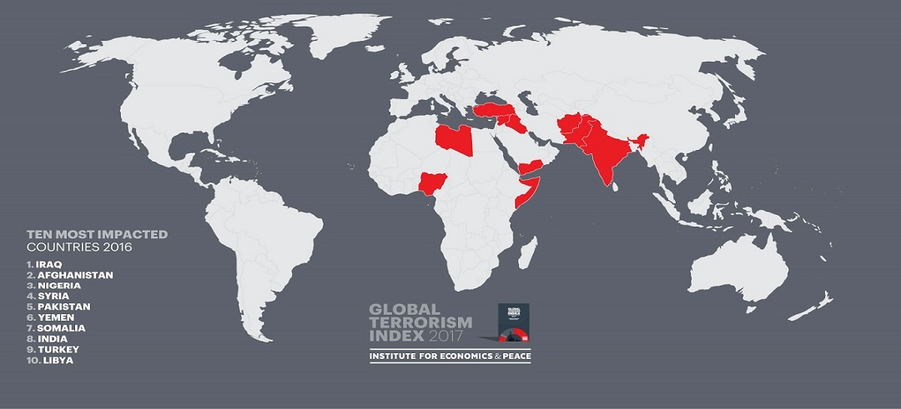
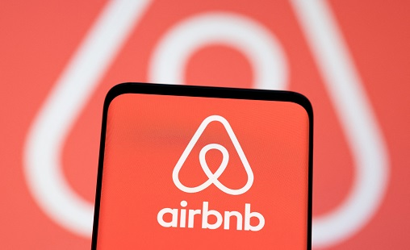
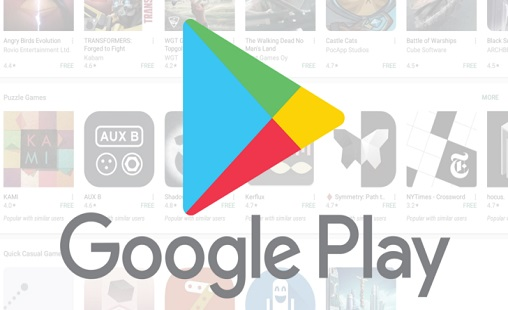

The purpose of this project is to explore the Global Terrorism Database (GTD)
and analyze trends and patterns in terrorist activities from 1970 to 2017.
The project aims to gain insights into the nature of terrorist attacks around the world,
including the number of casualties, locations, and types of attacks.


This project involves exploring and analyzing the data on millions of Airbnb
listings to discover key understandings that can be used by the company for security,
business decisions, understanding customer and host behavior, guiding marketing initiatives,
and implementing innovative additional services. Airbnb has become a unique and personalized
way of experiencing the world since its inception in 2008, and data analysis has become a
crucial factor for the company to stay ahead of the competition. The dataset contains around
49,000 observations with 16 columns, including a mix of categorical and numerical values.
By analyzing this dataset, valuable insights can be gained about customer and host behavior,
pricing trends, and other factors that can be used to make data-driven decisions to improve
the company's performance and offerings.
This project involves exploring and analyzing the Orange Telecom's Churn Dataset,
consisting of cleaned customer activity data and churn label specifying whether a
customer cancelled the subscription. Orange S.A. is a French multinational
telecommunications corporation, and customer churn is a significant concern for
telecom companies. By analyzing this dataset, key factors responsible for customer
churn can be identified, and recommendations can be made to ensure customer retention.
The dataset contains features such as call duration, number of calls, and other customer
activity data that can be used to identify patterns and trends leading to churn.
By exploring this data, valuable insights can be gained about customer behavior and
satisfaction, which can be used by Orange S.A. to improve their offerings and retain
customers. This project aims to provide recommendations to ensure customer retention
and improve the company's performance in the competitive telecom market.

This project involves exploring and analyzing the Play Store apps data and customer
reviews dataset to discover key factors that are responsible for app engagement and
success in the Android market. The Play Store apps data is a rich source of information
for app-making businesses to drive their success. The dataset provides values for
categories, ratings, sizes, and more. Similarly, the customer reviews dataset
contains valuable insights about the users' experiences with the Android apps
that can be leveraged by app developers to improve their apps and capture the
market share. This project aims to identify actionable insights that can be used
by developers to enhance their app engagement and success in the competitive Android market.
This project involves exploring and analyzing the World Bank EdStats All Indicator Query,
a dataset containing over 4,000 education indicators that describe education access,
progression, completion, literacy, teachers, population, and expenditures worldwide.
By analyzing this dataset, key variations in education indicators across the globe
can be identified, providing valuable insights into education systems and helping
policymakers make data-driven decisions to improve education outcomes.
This project involves analyzing a hotel booking dataset to discover key factors that affect hotel bookings, such as optimal length of stay and the best time of year to book a room. The dataset includes booking information for a city hotel and a resort hotel, and can provide valuable insights for hotel managers and owners to improve their offerings and attract more customers.